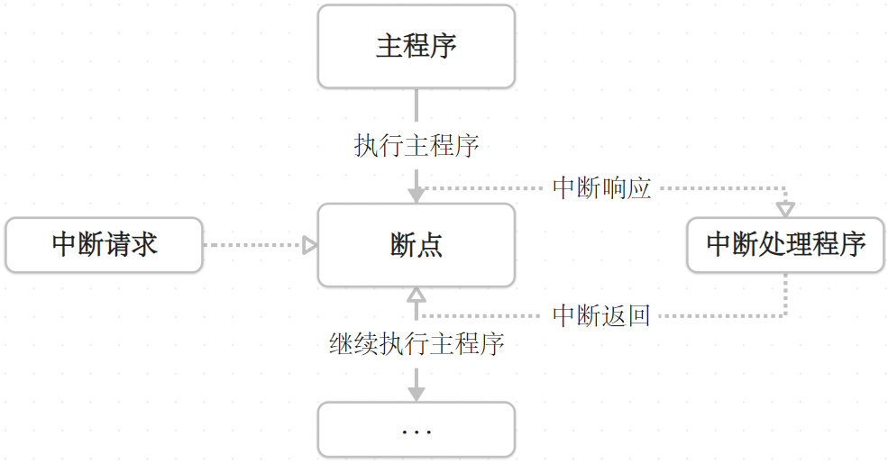

程序实验11&12.外部中断-定时器中断
中断系统
中断概念
中断是为使单片机具有对外部或内部随机发生的事件实时处理而设置的，中断功能的存在很大程度上提高了单片机处理外部或内部事件的能力。引起程序中断的根源称为中断源。
单片机处理中断的过程：
引起CPU中断的根源称为中断源。
单片机的中断系统允许有多个中断源，当几个中断源同时向CPU发出中断请求时，需要解决中断优先级的问题，CPU会先执行优先级高的中断程序。单片机中对中断源有默认的优先级别，也可以通过对应的寄存器修改优先级。
如果CPU在执行中断源A的中断程序时发生了优先级更高的中断源B，那么CPU将转而执行B的中断程序再回到原来的位置继续执行A的中断程序，称为中断嵌套。中断嵌套在51单片机中应用很少，在STM32、DSP等中断较为复杂的单片机中经常遇到。
中断的优点：分时操作、实时响应、可靠性高。
中断结构
一个增强型51单片机提供了8个中断源，分别为外部中断INT03、定时器中断TIME02和一个串行口中断UART，而普通系列的51单片机均有的5个中断源为INT0、INT1、T0、T1、UART。
 如图是一个中断结构，从上到下中断的优先级从高到低，左侧连接单片机管脚。在中断标志之前，外部中断需要先通过IT0、IT1选择中断触发方式，0为低电平触发，1为下降沿触发。中断标志在接收到中断后自动置为1，其中串行中断的中断标志经过一个或运算。IE寄存器 设置中断在程序中的有效与否，源允许分别控制每个中断的有效性，而总允许控制所有中断的有效性，只有中断对应的源允许和总允许都接通时才能被CPU接收。IP寄存器 部分配置中断优先级，1的优先级高于0，其余遵循默认优先级。
如图是一个中断结构，从上到下中断的优先级从高到低，左侧连接单片机管脚。在中断标志之前，外部中断需要先通过IT0、IT1选择中断触发方式，0为低电平触发，1为下降沿触发。中断标志在接收到中断后自动置为1，其中串行中断的中断标志经过一个或运算。IE寄存器 设置中断在程序中的有效与否，源允许分别控制每个中断的有效性，而总允许控制所有中断的有效性，只有中断对应的源允许和总允许都接通时才能被CPU接收。IP寄存器 部分配置中断优先级，1的优先级高于0，其余遵循默认优先级。
中断寄存器
IE 寄存器
| 位 | 7 | 6 | 5 | 4 | 3 | 2 | 1 | 0 |
|---|---|---|---|---|---|---|---|---|
| 字节地址：A8H | EA | ES | ET1 | EX1 | ET0 | EX0 | ||
| 允许接收中断时将相应的位设为1。 |
TCON寄存器
| 位 | 7 | 6 | 5 | 4 | 3 | 2 | 1 | 0 |
|---|---|---|---|---|---|---|---|---|
| 字节地址：88H | TF1 | TR1 | TF0 | TR0 | IE1 | IT1 | IE0 | IT0 |
| IT0和IT1控制相应外部中断的触发方式，0为低电平触发，1为下降沿触发。TR0、TR1为定时器控制位，在定时器中断中会讲到。其余中断请求标志位皆由单片机内部自动设置。 |
中断优先级
| 中断源 | 中断标志 | 中断服务程序入口 | 优先级顺序 |
|---|---|---|---|
| 外部中断0（INT0） | IE0 | 0003H | 高 |
| 定时/计数器0（T0） | TF0 | 000BH | ↓ |
| 外部中断1（INT1） | IE1 | 0013H | ↓ |
| 定时/计数器1（T1） | TF1 | 001BH | ↓ |
| 串行口 | R1或T1 | 0023H | 低 |
中断号
中断号在程序中指引CPU定位哪个中断并进入相应的中断服务程序。
| 中断源符号 | 名称 | 中断引起原因 | 中断号 |
|---|---|---|---|
| INT0 | 外部中断0 | P3.2引脚低电平或下降沿信号 | 0 |
| T0 | 定时器中断0 | 定时/计数器0计数回0溢出 | 1 |
| INT1 | 外部中断1 | P3.3引脚低电平或下降沿信号 | 2 |
| T1 | 定时器中断1 | 定时/计数器1计数回0溢出 | 3 |
| T1/R1 | 串行口中断 | 串行通信完成一帧数据发送或接收引起中断 | 4 |
中断响应条件
满足下面三个条件CPU才能触发中断响应：
- 中断源有中断请求。
- 中断源的中断允许为1。
- CPU开中断。 以外部中断0为例：
|
|
外部中断
硬件设计

外部中断INT0和INT1分别为单片机管脚P32和P33的附加功能，而这两个管脚又与独立按键K3和K4连接。管脚自带上拉电阻默认为高电平，按键按下时管脚接地变为低电平，假如将外部中断配置为下降沿的触发方式则按键按下瞬间触发外部中断。
实验11 外部中断
实现功能：使用独立按键K3控制LED1亮灭。
|
|
定时器中断
定时器介绍
CPU时序
- 振荡周期：为单片机提供定时信号的振荡源的周期。
- 状态周期：两个振荡周期。
- 机器周期：六个状态周期。
- 指令周期：完成一条指令占用的时间，通常为1~4个机器周期。 如果单片机的振荡频率为12MHz，则对应的机器周期为$1\mathrm{\mu s}$。
定时器原理
定时器的实质是一种加一计数器，随着脉冲的输入自动加一，可存储16位，分为高八位TH和低八位TL。当计数器数位全为1时，下一个脉冲将使计数器溢出，计数器归零的同时会使相应的中断标志置一。定时和计数的次数通过计数器的初值来设定，$次数=溢出值-初值$，对于较大的次数采用分段计数。
定时器结构

51单片机定时器的工作由两个特殊八位寄存器TCON和TMOD来控制。TMOD确定定时器的工作方式和功能，TCON低四位控制外部中断，高四位控制定时器的启停及溢出。
定时器的两个功能分别为定时功能和计数功能。定时功能接收来自CPU振荡器（OSC）的机器周期脉冲，计数功能接收来自单片机管脚P3.4和P3.5的脉冲。
工作方式寄存器TMOD
| 位 | 7 | 6 | 5 | 4 | 3 | 2 | 1 | 0 |
|---|---|---|---|---|---|---|---|---|
| 字节地址：89H | GATE | C/$\bar{\mathrm{T}}$ | M1 | M0 | GATE | C/$\bar{\mathrm{T}}$ | M1 | M0 |
| 低四位控制T0，高四位控制T1。 |
- GATE：门控位，控制定时器启动是否受外部中断影响。当GATE=0，只需通过寄存器TCON的TR0/TR1=1来使对应定时器启动；当GATE=1，在前面的基础上还需要来自外部中断引脚INT0/INT1的高电平才能启动。
- C/$\bar{\mathrm{T}}$：定时/计数模式选择位，定时器模式设为0，计数器模式设为1。
- M1&M0：工作方式选择位，见下表：
| M1M0 | 工作方式 | 说明 |
|---|---|---|
| 00 | 方式0 | 13位定时/计数器 |
| 01 | 方式1 | 16位定时/计数器 |
| 10 | 方式2 | 8位自动重装定时/计数器 |
| 11 | 方式3 | T0分成两个独立的8位定时/计数器；T1此方式停止计数 |
| 我们常用的为方式1和方式2，方式1用于定时/计数器工作，方式2用于串口通信波特率的生成，将在下一个实验涉及。 |
控制寄存器TCON
| 位 | 7 | 6 | 5 | 4 | 3 | 2 | 1 | 0 |
|---|---|---|---|---|---|---|---|---|
| 字节地址：88H | TF1 | TR1 | TF0 | TR0 | ||||
| TF0/TF1：定时器溢出中断请求标志，由硬件自动完成，可通过调用查询定时器溢出状态。 |
TR0/TR1：定时器的运行控制位，设置为1时定时器开始工作，设置为0时定时器停止工作。
定时器工作方式
方式0
 13位定时/计数器用到TH的八位和TL的低五位。
13位定时/计数器用到TH的八位和TL的低五位。
GATE控制原理：GATE经过一个非门后和INT引脚进行或门运算，若GATE=0，非门后为1，无论INT引脚为0还是1，或运算结果都为1；若GATE=1，非门后为0，只有INT引脚为1，或运算结果才为1。随后再和TR运行控制位进行与运算，当TR=1且或运算结果为1时定时器启动。
C/$\bar{\mathrm{T}}$控制原理：当C/$\bar{\mathrm{T}}$=1，虚线对应开关打到1，定时器接收T0引脚的脉冲；当C/$\bar{\mathrm{T}}$=0，开关打到0，定时器接收机器周期脉冲。
方式1

方式1与方式0的区别为定时器TH的八位和TL的八位都参与计数。
方式2

方式2中用TL进行计数，TH进行装载。当TL溢出时，TH会自动将设置好的值装载进TL重新开始计数，适用于精确的脉冲信号发生器，例如串口通信。
方式3

方式3只适用于T0，此时T1停止工作。其中TL0可用于定时和计数，与中断标志TF0连接；TH0仅用于定时，与中断标志TF1连接。
定时器配置
- 对TMOD赋值以确定T0和T1的工作方式。
- 根据所要定时的时间计算初值并写入TH0、TL0或TH1、TL1。
- 如果使用中断，则对EA赋值并开放定时器中断。
- 设置TR0或TR1为1，启动定时/计数器定时或计数。 对于初值的计算，可使用相关软件。下图中，方式1溢出值为$2^{16}=65536$，减去1ms对应的机器周期数1000，将结果64536转化为十六进制，FC对应高八位写入TH，18对应低八位写入TL。
|
|
其中TMOD使用了或运算是为了不干扰高四位对定时器1的配置，赋值符号右侧将高四位都设为0不会改变原有高四位的值，如果配置定时器1则将低四位都设为0。
实验12 定时器中断
实现功能：通过定时器0中断控制D1指示灯隔1秒闪烁。
|
|
本篇完